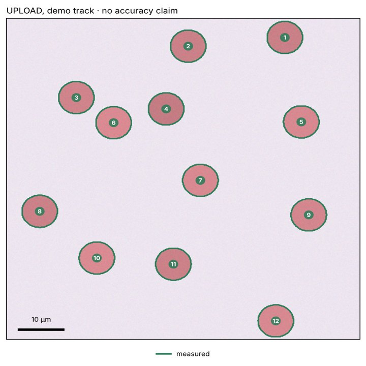

Blood-smear structural findings · POC v0.1.0
A finding that carries its own evidence, or a typed refusal
One Wright–Giemsa thin-film field image goes in. What comes out is a structural finding — a typed, unit-carrying, provenance-sealed statement about red-cell morphology — together with an itemised record of everything the system declined to state, and why.
The pipeline produces findings that carry their own evidence, and when the evidence is absent it refuses in a typed, machine-checkable way instead of emitting a number that looks the same as a supported one.

Why refusals are the product
A number that looks supported, but isn't
A demo that segments cells and prints percentages proves nothing without ground truth: the numbers are unfalsifiable. A system that withholds a µm² figure because the pixel scale was never declared proves the architecture is load-bearing.
Every quantity is emitted as Stated(value, unit, provenance) and renders like 45 µm² [POC-S3]. A test asserts no report line carries a number without a unit — and a companion test plants a bare number to prove that check can fail.
Scope, declared and enforced
Thin film only
The POC answers one question on one preparation: red-cell morphology on a Wright–Giemsa thin film. The boundary is biological: a thick film lyses the erythrocytes on purpose to concentrate parasites, so red-cell morphology is absent from the material, not merely hard to see.
The preparation is a required declaration with no default, and is never inferred from the image. A thick film produces F12_PREPARATION_NOT_APPLICABLE before anything is measured — a report carrying no quantity at all.
Nine stages
Each stage names the refusal it can emit
Select a stage. Reportability resolves to one of four states rather than a boolean, because “we checked and it failed” and “nobody said what passing means” need different repairs.
Interactive
Refusal explorer
Declare the inputs an operator would declare, then see which stage stops the run and why. The order of the gates follows the published specification; every message and report shown was recorded from a real run of the DMOS pipeline. The DMOS code itself does not run on this page.
Recorded output
A real structural finding
The full report the pipeline wrote for the synthetic field above, with every value from deterministic geometry. Note what it declines, and the refusal path left armed on purpose so it can be demonstrated.
Recorded output
Four reportability states from one pipeline
Same field, varying only what was declared. 0 of 0 is undefined, not 0%. Eight cells is adequate only if somebody declared a bar; there is no default adequacy.
S7 · provenance seal
Change one value, and the record says where
Every stage appends an event to a hash-chained log, and the run is sealed. Appending after sealing raises: a record that can grow after attestation is not evidence. Changing a single payload value is detected and named.
Replays a recorded run: the denominator in one event was changed to 999 after sealing.
Reported before the successes
The result that failed, and the repair
The first quality score was admitted / found. Under a defocus sweep it stayed pinned at 1.00 while the reported mean area drifted by −3.05 µm² (−6.8%) — reported in full, at full confidence, with nothing marking it.
Uniform blur shrinks every object by about the same amount and fragments none, so nothing is rejected and the rejection rate never moves. A rejection-rate score sees heterogeneous failure and is blind to homogeneous bias — the more dangerous case.
The repair added acquisition sharpness, combined with the selection term by minimum rather than mean. The original negative finding is kept as a test, so a later “simplification” back to one term cannot look harmless.
Worst area error under each degradation
Table view
Cross-check against a second specification
The EG bridge
Seven DMOS evidence records were expressed in the vocabulary of EG (Evidence-Gated Multi-Scale) and routed through EG's own interpreter over its own normative YAML: 5 permitted, 2 refused, with zero edits to EG.
- Calibration cannot reach a population claim. Quality evidence moves freely from pixel to cell component, but pixel → population is forbidden.
- A single cell cannot decide the specimen. Cell → smear has no direct route, while the same climb one rung at a time is 4 of 4 permitted.
DMOS and EG share an author, so their agreement reflects consistency, not independent corroboration.
Seven values with no defaults
An absent value is a refusal, never a guess
- Pixel scale + optical configuration — a property of this microscope at this objective.
- Calibration validity interval — inventing one invents the lab's cadence.
- Component policy — whether a fragmented object is refused or measured by its largest piece.
- N:C convention — more than one definition is in use.
- Red-cell vocabulary — a service may not name a category no upstream task produces.
- Minimum assessable cells — the clinical adequacy bar.
- Expected populations + slides — completeness needs a declaration of what should be there.
What this does not show
Status, honestly
- No accuracy, sensitivity, specificity or AUROC. No trained model contributes to any reported value; candidate selection is a classical-CV stand-in.
- The synthetic track carries every correctness claim; the real track only illustrates the mechanism and makes no accuracy claim.
- No clinical claim. Outputs are structural descriptors. Whether a residual area error matters is a judgment for whoever signs the open decisions.
- The test counts below count contracts and refusals; not one measures model performance.
Open decisions blocking the next phase
Unsigned, and visible
The system refuses to run without these values rather than defaulting them, which is why the list is visible here instead of buried.
Source code is private, pre-validation. Open-source release is intended only after clinical validation: releasing an unvalidated medical knowledge system publicly would be a knowledge-safety failure. This page publishes recorded outputs, not code.